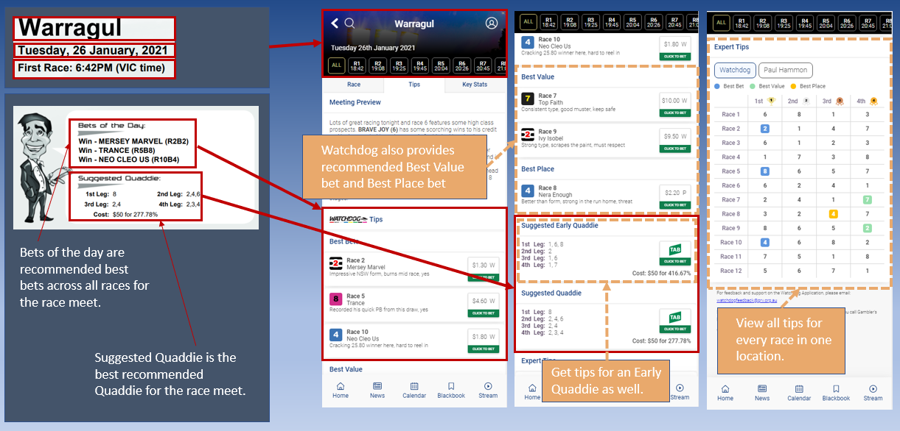
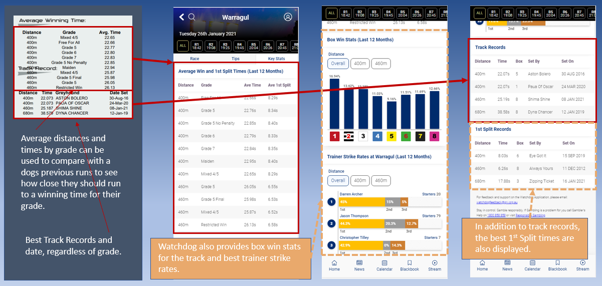
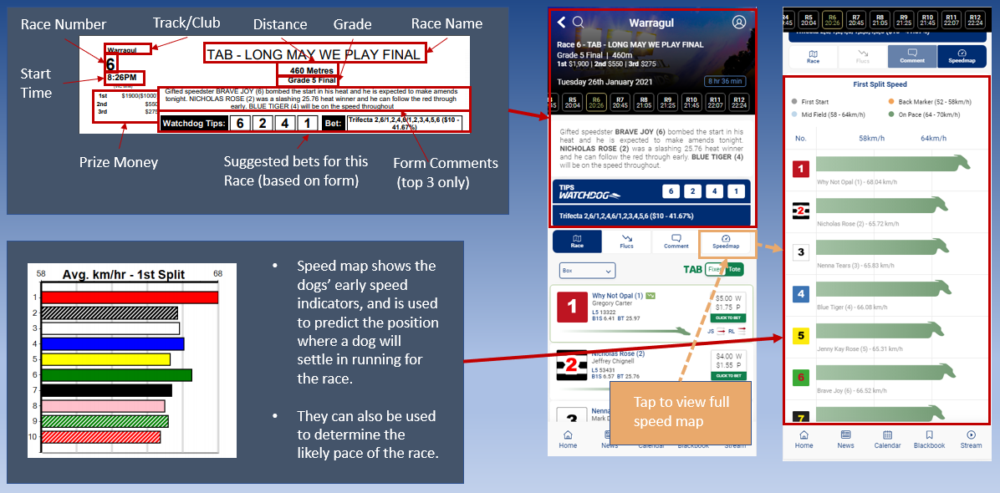
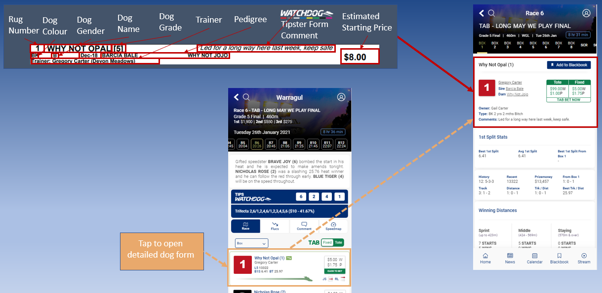
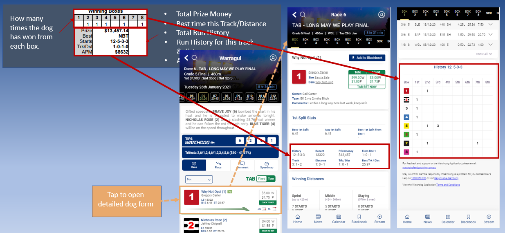
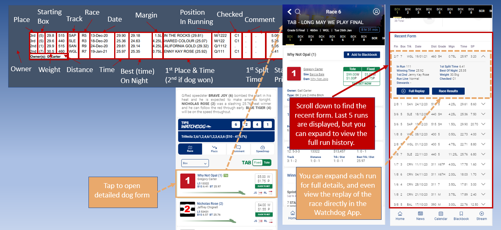

For those who are used to a little more detail on individual Dog Form than is shown The Snapshot, The Whisper or The Runaway
Train and normally use the Brainstormer instead, it is easy to find the information you normally use for your form analysis in
Watchdog. It is also easy to drill down for even more detailed statistics and information for each dog and trainer! As an added bonus,
the Watchdog also provides more tips and stats options than are available in the Brainstormer.

More detailed track statistics are also available in The Watchdog:

The race overview and speedmaps are still available. The speedmap indicator is displayed underneath each dog in the race form card, but can
also be viewed as a consolidated speedmap for all dogs in the race:

In the Watchdog, each dog also has it's own form card for the race. This is where the more detailed information about each runner and it's
form summary are displayed:

The form summary is available at the top of the form card for each dog, and the Box History for each dog is still available at the bottom of
the form card for each dog:

The Watchdog also allows you to view the full form history for each dog. You can view even more statistics for each run, and watch the race
replay directly from within the Watchdog:
